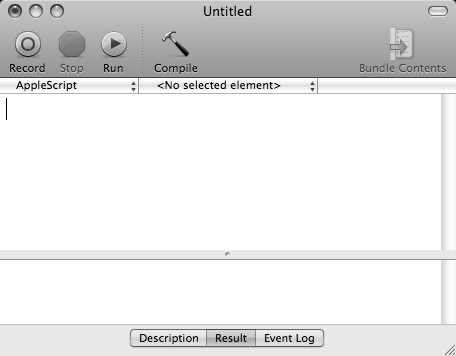
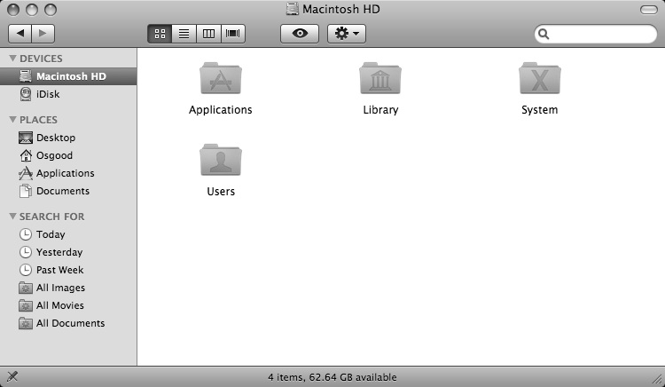

The Script Editor
Since this tutorial is very “hands-on,” we’ll be writing scripts right away. To write a script, you’ll use the Script Editor application installed in your system. You can find this application in the AppleScript folder located in the Applications folder on your computer’s main hard drive. Navigate to this folder now and double-click the Script Editor icon to launch the application.
NOTE: The following description and illustrations are for the Script Editor application included in Mac OSX 10.5. Earlier versions will have a different design.
The Script Editor application icon.
After starting up, the Script Editor application displays a multi-paned window known as a script window. This script window comprises two panes, the top pane containing the script text, and the bottom pane containing either the script description, the script result, or the script log, depending on which tab below the pane has been selected.
{kind=link}

A script window in the Script Editor application.
By default, the script window is rather small, so you may wish expand its size before proceeding with this tutorial. Please note that the Script Editor and other AppleScript tools are covered in detail elsewhere in this book.
Our First Script
You’ll begin the process of learning AppleScript by writing a series a simple script commands in the form of a “tell statements.” A tell statement is a single line script beginning with the verb: tell. This verb is used to direct script actions at a specific application or scriptable object. A tell statement is composed of two parts:
- A reference to the object to be scripted, and
- The action to be performed.
Using this grammatical format or syntax, we can write scripts instructing the Finder to perform whatever actions we desire. Here's our first script:
 A simple script statement to close all open Finder windows.
A simple script statement to close all open Finder windows.
tell application "Finder" to close every window
Enter this script in the top pane of the Script Editor script window exactly as show (be sure to encase the word “Finder” in straight quotes). Click the Compile button on the script window to confirm that it has been written correctly and to prepare the script for use.
Next, click the Run button to play your script. The operating system will read the script and send the appropriate commands to the Finder application, which will then follow the instruction to close any open windows.
Congratulations, you’ve written and run your first AppleScript script!
Note that the word “Finder” is enclosed in quotation marks in the script. Names and textual data are always quoted in scripts. This is done to indicate to the Script Editor that the quoted material is textual data and not to be considered as commands or instructions when the script is compiled in preparation for execution.
Delete the previous script from the script window, then enter, compile, and run the following script:
 A script to open the hard drive that contains the currently running System folder.
A script to open the hard drive that contains the currently running System folder.
tell application "Finder" to open the startup disk
A new Finder window will now appear on the desktop displaying the contents of the startup disk. We’ll use this newly opened window as we examine the properties of a Finder window.
{kind=link}

Finder windows display the contents of folders or disks.
A Word about Finder Windows
Finder windows are different from other windows used by the Finder application, in that they display the contents of folders and, may contain a Toolbar and Sidebar. The remaining script examples of this chapter we will use the term Finder window instead of the generic term window when referring to Finder windows.